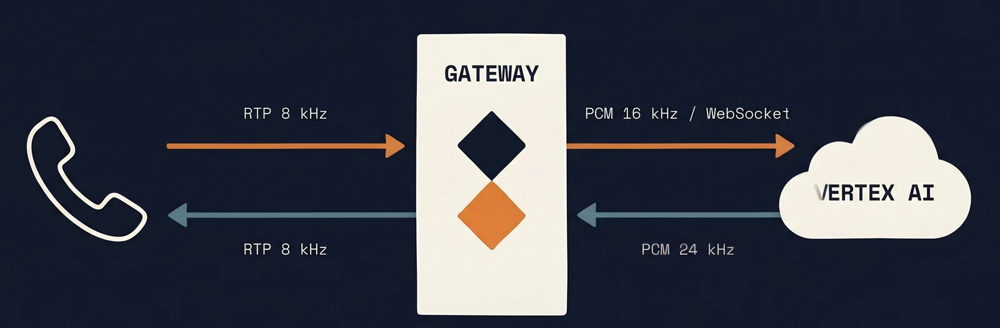

Quando un cliente ci chiede di mettere un'AI vocale al posto del centralino, la prima cosa che dobbiamo spiegare è che il problema più difficile non è il modello — quello esiste già, lo dà Google. Il problema è il traduttore che sta in mezzo: tra il formato della rete telefonica e l'AI di Google ci sono trent'anni di stack diversi che non si parlano. Ed è lì che lavoriamo.
In questo articolo raccontiamo come abbiamo costruito quel traduttore: cosa fa esattamente, perché era difficile, e perché abbiamo scelto Vertex Live al posto di alternative più note.
Due lingue diverse
La rete telefonica tradizionale parla SIP (Session Initiation Protocol) e RTP (Real-time Transport Protocol). I codec audio sono vecchi: G.711, G.729 — pensati per linee telefoniche a 8 kHz, ottimizzati per voce umana, decenni di standardizzazione alle spalle.
Vertex AI, invece, vuole audio moderno: 16 kHz minimo, formato Opus o PCM lineare, streaming bidirezionale via WebSocket. Sono due mondi che semplicemente non si toccano.
Tra il formato della rete telefonica e l'AI di Google ci sono trent'anni di stack diversi che non si parlano.
I due flussi
Il nostro gateway gestisce due flussi simultanei e indipendenti:
- SIP → Vertex. La voce del chiamante arriva in pacchetti RTP a 8 kHz. Li ricampioniamo a 16 kHz, li riconfezioniamo in chunks da 20 ms in formato PCM, e li mandiamo a Vertex via WebSocket — senza aspettare la fine della frase.
- Vertex → SIP. L'AI genera la risposta in audio Opus 24 kHz. Lo decomprimiamo, lo ricampioniamo a 8 kHz, lo riconfezioniamo in pacchetti RTP, e lo rispediamo alla cornetta.
I due flussi corrono in parallelo. La cosa difficile da fare bene non è la singola conversione — ci sono librerie standard per ognuna — è gestire la simultaneità: cosa succede quando l'utente parla mentre l'AI parla? Quando interrompe a metà frase? Quando c'è un ritardo di rete?
Perché Vertex Live
Le alternative principali sono Realtime API di OpenAI, Azure Speech, e qualche soluzione open-source. Abbiamo scelto Vertex Live per tre ragioni:
- Residenza dati in Europa garantita su
europe-west8(Milano). - Latenza nostro-stack a Vertex sotto i 50 ms in condizioni normali, contro gli 80-100 ms verso gli endpoint OpenAI.
- Tooling integrato col resto dello stack GCP: function calling che parla con AlloyDB e Cloud Run senza colla esterna.
Cosa abbiamo imparato
Tre cose, in ordine di sorpresa.
Primo: il bottleneck non è mai il modello. È la pipeline audio. Un ricampionamento fatto male introduce 30-40 ms di ritardo che bastano a rendere la conversazione "robotica". Abbiamo riscritto la pipeline tre volte prima di trovare il punto giusto.
Secondo: le interruzioni sono il vero test. Un sistema che non gestisce bene l'interruzione del chiamante è inaccettabile in produzione. Abbiamo dedicato circa un terzo del tempo di sviluppo solo a quello.
Terzo: SIP è un protocollo brutto, ma documentato. Vale la pena studiarselo, soprattutto la parte di gestione codec. Senza questo, ogni nuova centrale telefonica diventa un'avventura.